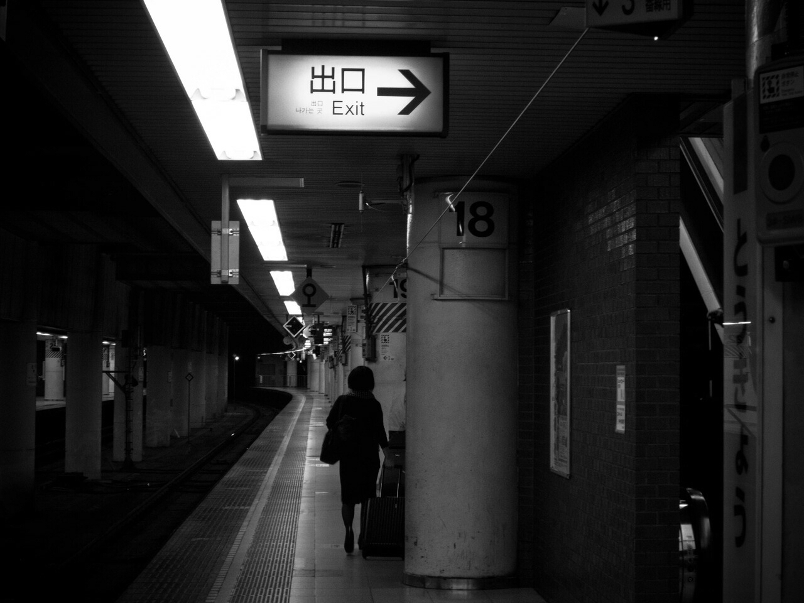
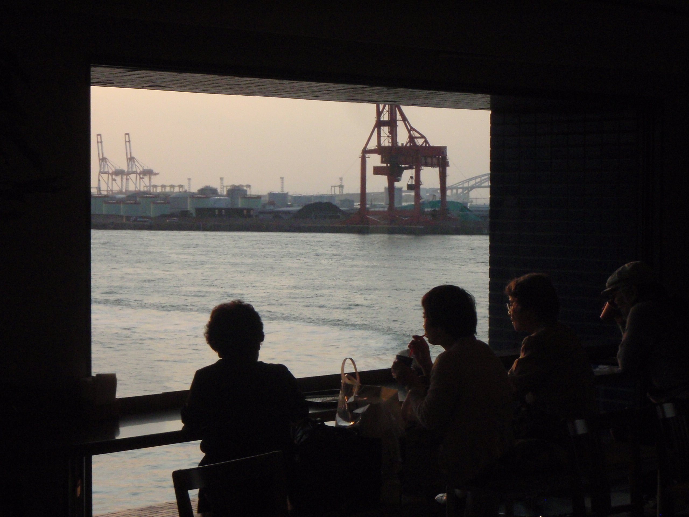
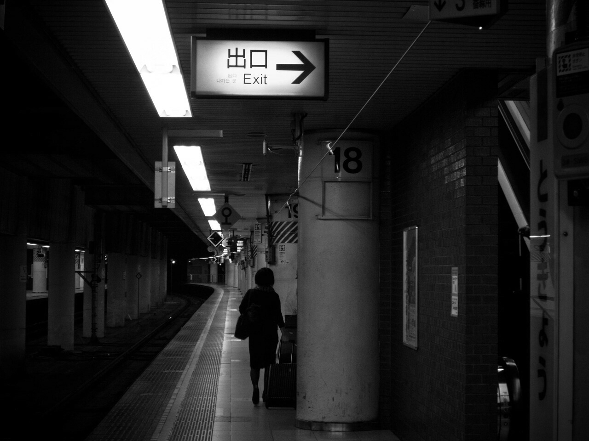
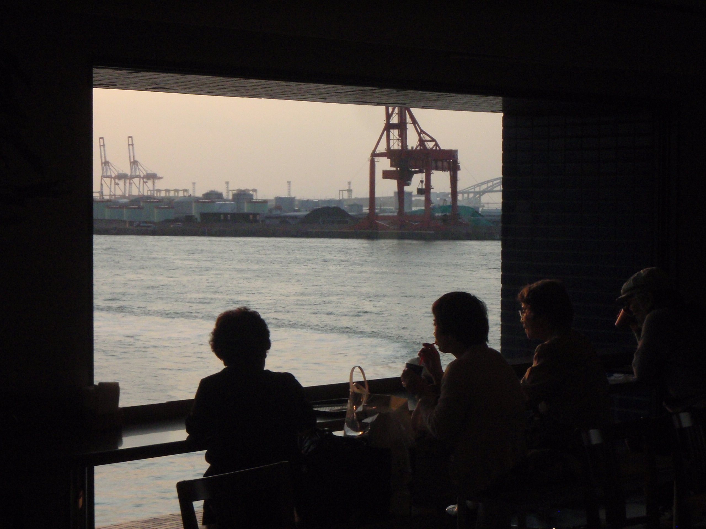
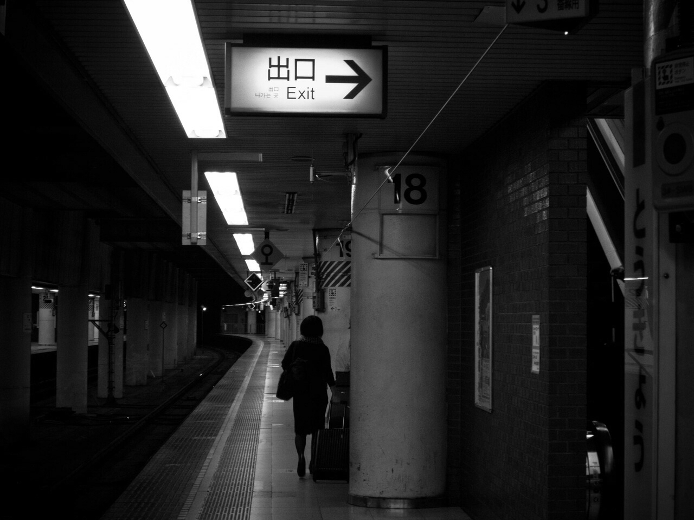
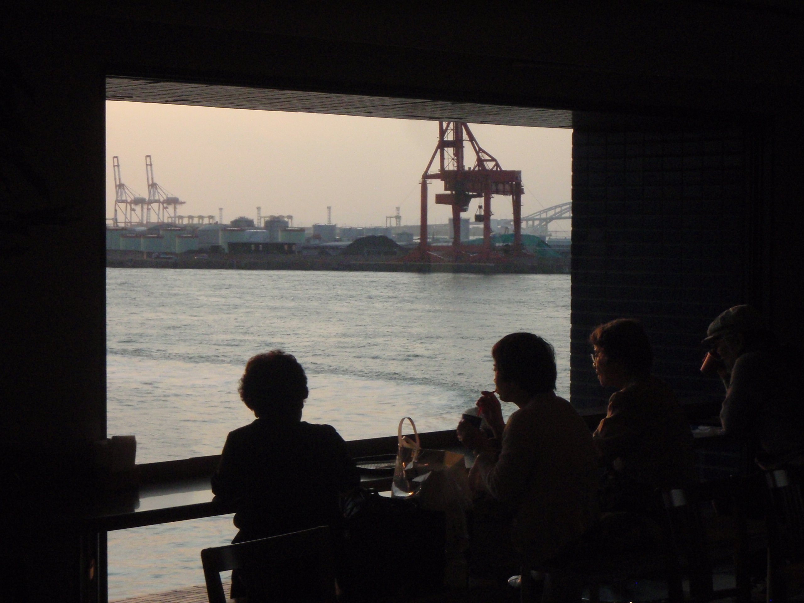

I was born in San Diego, Ca. Soon after, my family moved to Norfolk, Va because my father was stationed at the naval base there. We didn't stay there long, though. I have lived in many places in the U.S., New York, Indiana, and New Mexico to name a few. As an adult, I finally settled in Seattle. It's still my favorite city in the States. I develped a healthy coffee addiction during my time there, and have yet to shake it! In 2012 I got married to my wife Aki, and we moved to Japan in 2013.
Before we got married, I was working at the UW medical center and attending classes at Seattle Central Community College for Nursing. Aki and I decided to move to Japan, so I quit college and got a Tefl certification. Soon after, I attended university to obtain a Bachelors of Education so I could teach in the school system in Japan. In 2022, I enrolled in Code Fellows' software engineering program. I was a software engineer until I passed away at the ripe old age of 106 in the year 2088. I am still addicted to coffee.
As a software engineer, my goals are to master web development and move into other areas of engineering, perhaps machine learning or mobile app development. I also aim to keep a good work/life balance. I want to pursue my hobbies of cycling and photograpy to the full! I've even become a hobbyist coffee roaster to keep that fix going!

